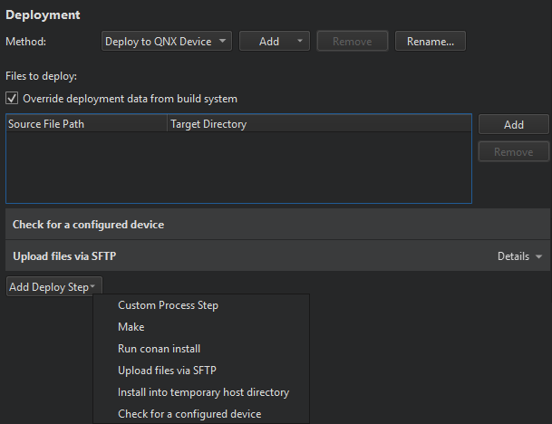

QNX Neutrino Deploy Configuration
Specify settings for deploying applications to QNX Neutrino devices in the project configuration file and in Projects > Deploy Settings.

The deployment process is described in more detail in Remote Linux Deploy Configuration.
Finding Configured Devices
The Check for a configured device deployment step looks for a device that is ready for deployment.
See also How To: Build and Run, How To: Develop for QNX, QNX Run Settings, Remote Linux Deploy Configuration, and Remote Linux Run Settings.